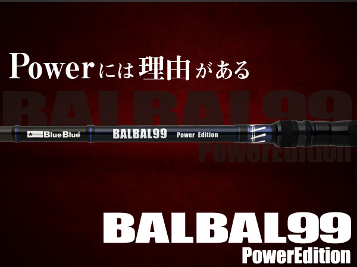
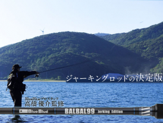
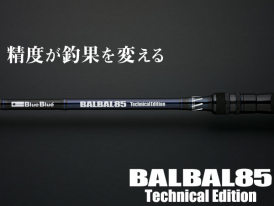

バルバル99 パワーエディション
（BALBAL99 Power Edition）
バルバル99 パワーエディションはBlueBlue（ブルーブルー）のシーバスロッドです。
BlueBlueプロスタッフ・高橋優介氏監修のバルバルシリーズ第三弾。一般的なシーバスロッドのパワー表記でいえばMH〜Hクラスで、シーバスの引きを受け止めるだけなら明らかにオーバースペックともいえるパワーを、あえて持たせています。その理由は「16cmを超えるビッグルアーを振り切るため」と「遠距離のピンスポットを正確に射抜くため」の2つです。

画像出典:BlueBlue公式HP
スペック
- メーカー
- BlueBlue（ブルーブルー）
- タイプ
- シーバスロッド（スピニング・2ピース）
- 全長
- 9ft 9in
- 自重
- 210g
- 仕舞寸法
- 152cm
- 推奨ルアー重量
- 12〜70g
- 推奨PE
- 0.8〜2号
- ガイド
- 全ガイドFujiチタンガイド
- 監修
- 高橋優介（BlueBlueプロスタッフ）
- 価格
- 63,000円（税込69,300円）
- 発売
- 2026年10月
- 販売
- BlueBlue会員限定製品
▼今すぐチェック

バルバル99 パワーエディションの特徴
投げるために曲がり、狙うためにブレない「Power」
-
16cmを超えるビッグルアーを振り切る
最大70gのルアーに対応。ガチペンライオットやコノ野郎180といった重量級ルアーも、ロッドをしっかり曲げ込んで振り切ってキャストできます。
-
遠距離のピンスポットを正確に射抜く
30g前後の飛ばしやすいルアーを、80m先のボイルや70m先の橋脚など、遠く離れたピンスポットへ正確に撃ち込むためのパワー。パワーを抑えたロッドではキャスト時にブレが出やすく、距離が伸びるほどそのズレが大きくなるためです。
-
曲げ込める範囲で最大限のパワー
キャスト時にしっかり曲げ込める範囲で、最大限のパワーと最適な調子を追求。重量級ルアーへの対応力、飛距離、ピンスポットへの精度を高い次元で両立させています。
-
全ガイドFujiチタンガイド
全ガイドにFujiのチタンガイドを採用しています。
バルバル99 パワーエディションの使い方
重量級ルアーは、ロッドにしっかり重さを乗せて曲げ込み、振り切るイメージでキャストします。ロッドのパワーに任せて腕だけで振るより、曲がりを使って投げるほうが飛距離と精度が安定します。
30g前後のルアーで遠くのピンスポットを狙うときは、着水点を決めてから投げ、ブレの少ないキャストで正確に送り込みましょう。
バルバル99 パワーエディションの向いている釣り
16cmを超えるビッグベイトや重量級のペンシルを投げたいとき。また、河口や大河川、港湾などで、80m先のボイルや70m先の橋脚といった遠距離のピンスポットを狙いたい場面に向いています。
ワンポイント
シーバスの引きだけを考えるとオーバースペックなロッドなので、軽いルアー中心の釣りなら同じバルバルの99 ジャーキングエディション（8〜42g）や85 テクニカルエディション（5〜30g）のほうが扱いやすくなります。「重いルアーを投げる」「遠くのピンを撃つ」が主な釣りなら、パワーエディションを選びましょう。
バルバルシリーズの使い分け
| モデル | 長さ／自重 | ルアー重量／PE |
|---|---|---|
| 85 テクニカルエディション | 8ft 5in／137g | 5〜30g／PE0.6〜1.5号 |
| 99 ジャーキングエディション | 9ft 9in／202g | 8〜42g／PE0.6〜2号 |
| 99 パワーエディション | 9ft 9in／210g | 12〜70g／PE0.8〜2号（本記事のモデル） |
同じ9ft9inでも、ジャーキングエディションは8〜42g、パワーエディションは12〜70gと、扱えるルアーの重さが違います。港湾や小規模河川で軽いルアーを操るなら85、ジャーキング中心なら99 ジャーキングエディション、重量級ルアーや遠投のピン撃ちならパワーエディションと使い分けましょう。
ラインナップ
バルバルシリーズの3モデルです（画像はBlueBlue公式サイトのもの）。
最大70gのビッグルアーまで振り切れる、シリーズでいちばん強いモデル。

99 ジャーキングエディション同じ9ft9inで8〜42g。ジャーキングを中心にした釣りに。

85 テクニカルエディション8ft5inで5〜30g。軽いルアーを操る、より繊細な釣りに。
画像出典:BlueBlue公式HP
バルバル99 パワーエディションと組み合わせたいリール・ライン
おすすめのリール
12〜70gのルアーとPE0.8〜2号に合わせるなら、4000〜5000番クラスのスピニングリールが目安です。重量級ルアーを多投するなら、剛性の高いモデルを選ぶと安心です。
-
24ツインパワー C5000XG SHIMANO
5000番クラスのエクストラハイギア。重量級ルアーを多投するビッグベイトの釣りや、遠投で広く探る釣りに。
-
24ツインパワー 4000XG SHIMANO
4000番クラスのエクストラハイギア。30g前後のルアーでの遠投やピン撃ちを中心にするなら。
-
24セルテート LT5000D-CXH DAIWA
5000番クラスのエクストラハイギア。剛性の高いボディで、重量級ルアーにも合わせやすいモデル。
おすすめのライン
推奨PEは0.8〜2号。重量級ルアーを使うならPE1.5〜2号、30g前後のルアーで遠投するならPE1〜1.2号が目安です。リーダーはPEの3〜4倍程度の号数を選び、ストラクチャー周りでは1ランク太くしておきましょう（詳しくはラインセットの記事で解説しています）。
-
 アバニ シーバス マックスパワー PE X9
バリバス
詳細はこちら＞
アバニ シーバス マックスパワー PE X9
バリバス
詳細はこちら＞
ハイエンド・大型狙い向けのPE。強度を重視したい、ビッグルアーやランカー狙いの釣りに。
-
 シーガー PE X8
クレハ
詳細はこちら＞
シーガー PE X8
クレハ
詳細はこちら＞
コスパのよい8本編みPE。まずはこれで号数を試したい人に。
-
 グランドマックスFX ショックリーダー
クレハ シーガー
詳細はこちら＞
グランドマックスFX ショックリーダー
クレハ シーガー
詳細はこちら＞
大型狙いの定番リーダー。重量級ルアーやストラクチャー周りでは太めの号数で。